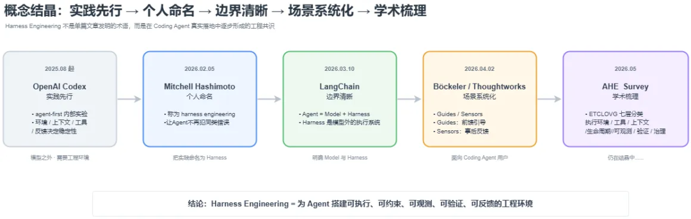
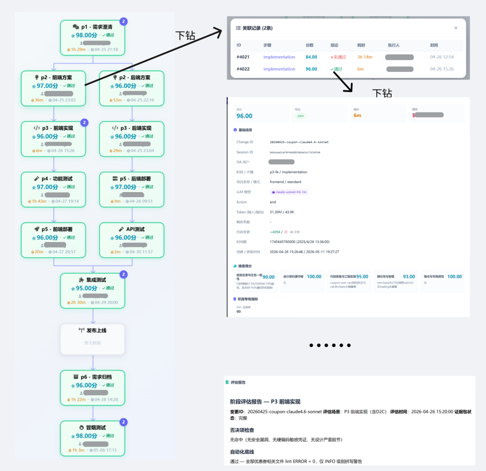

作者：fanniemeng
过去两年，AI Coding 从"能写出能跑的代码"走到"能放手让它写一整段功能"。但把这个能力放进真实业务、放进多人协作、放进存量系统里跑时我们发现一件怪事——AI 写得越快，整体节奏并没有同步加快。盘点下来，单看"AI 写出来的代码占比"这个数字一路走高，可真正落到版本节奏上，提效却远没有这个数字好看。出码率和提效之间，裂开了一道缝。从 OpenAI Codex 团队那篇 Harness 工程博客里反复强调的一个观察——"早期进展比预期慢，并不是因为 Codex 不具备相应的能力，而是因为环境的规范不够明确"——开始，整个行业都在补同一件事：给模型搭一套能稳定干活的"工作环境"。这一层最近被业界命名为 Harness Engineering——它不是教模型怎么回答，而是设计模型怎么工作。 在这里，也分享下我们的探索之旅，是踩过的坑、做过的取舍、和到现在还没解决的问题。
序章：Harness Engineering 是怎么"结晶"出来的
0.1 先把话说清楚：Harness 到底是什么
Harness Engineering 一句话能讲完：
不是教模型"怎么回答"，而是设计模型"怎么工作"。
用一个正在被广泛引用的等式表达就是：
Agent = Model（模型）+ Harness（模型外的运行框架）
命名者 Mitchell Hashimoto 给出的定义更朴素，也更直指核心：
"It is the idea that anytime you find an agent makes a mistake, you take the time to engineer a solution such that the agent never makes that mistake again."—— 每当你发现 Agent 犯了一个错，你就花时间在它外面工程化一个方案，让它永远不再犯同样的错。
它把工程关注点从"模型这一句说得对不对"，挪到了"模型这一整段活干得稳不稳"。换个视角看，这其实是 AI 工程关注点连续迁移的第三站——

图 1 · AI 工程关注点的三次迁移：Prompt → Context → Harness
Prompt Engineering（2022–2024）：关心单次调用——这一句话怎么说，模型这一次输出得更好。 Context Engineering（2025）：关心每一步——该把什么信息、以什么形式喂给模型。 Harness Engineering（2026）：关心整个任务——当 Agent 要跑长链条、多步骤的活，可靠性已经不取决于模型本身，而取决于模型外面那一整套工程化框架：执行环境、工具协调、状态管理、反馈注入、约束施加、进展验证。
一句话概括三者关系：Prompt 教模型怎么说话，Context 保证它上班有足够信息，Harness 给它搭一套能持续干活的工作环境。 三层不是替代关系，而是层层叠加——Harness 时代到来，意味着前两层已经基本成熟，短板被挤到了"模型外面"。
0.2 概念结晶时间线：仍在结晶中
有意思的是，"Harness Engineering"这个词不是某个人一拍脑袋造出来的，而是先有实践、后有命名、再被推广、最近才开始被学术界系统梳理——一个典型的"概念结晶"过程（还在过程中）：

2025 年8月起，OpenAI Codex 团队在 agent-first 内部实验中验证：模型能力之外，环境设计、上下文组织、工具抽象、反馈回路和控制系统同样决定 Agent 能否稳定工作。2026 年2月，Mitchell Hashimoto 将这类“发现 Agent 犯错后，用工程手段让它不再犯同类错误”的实践称为 harness engineering。随后 LangChain 用 “Agent = Model + Harness” 明确边界， Böckeler / Thoughtworks将其拆解为 guides 与 sensors，学界也开始用 ETCLOVG 七层分类做系统化梳理。 Harness Engineering 没有标准定义，但它有一条清晰的实践路径： 为Agent搭建可执行、可约束、 可验证、可反馈的工程环境。
Harness Engineering 没有标准定义，但它有一条清晰的实践路径： 为Agent搭建可执行、可约束、 可验证、可反馈的工程环境。
0.3 回到我们自己——AI 写得快了，研发整体没快多少
回到我们自己：团队很多人都已经离不开 AI Coding 了——一个独立小模块从想法到能跑，一杯咖啡的时间。但盘点产出时我们发现一件怪事：单看"AI 写出来的代码占比"，这个数字一路走高，可真正落到版本节奏上，提效却远没有这个数字好看。 出码率和提效之间，裂开了一道缝。分析根因是三件事:
根因一：研发从来不是"写代码"这一个环节。 早在《人月神话》和《没有银弹》里，Brooks 就把软件难题拆成两层：附属复杂度（accidental，语法、工具、平台带来的"翻译成本"）和本质复杂度（essential，概念结构的构造、对外部世界的顺应、需求的可变性）。AI 砍掉的恰好是附属那一层，本质复杂度一分没少——甚至因为代码产出更多，下游的对齐、review、维护反而更重了。"没有银弹"从来不是因为银弹造得不够好，而是因为狼根本不在编码这一层。
根因二：局部加速只会让瓶颈转移，不会让它消失。 把"写"这一环踩到十倍速，理解、对齐、验证、沉淀这些环节一步没动——整条链的总时长由没被加速的部分决定。于是写得越快，下游的 review、测试、维护越被动，瓶颈只是从"写"挪到了"收"，整体没动几分。
根因三：AI 看不见我们工程体系里的隐性约束。 团队规范、领域知识、历史依赖，这些没被显式喂进去的东西，AI 一概看不见。
换个说法：当 AI 把"写代码"这一格的成本压到接近零，研发的瓶颈就显形了——真正的瓶颈本来就不在写，在于"理解、对齐、追溯、沉淀、验证"这一连串"非编码工作"。
真正限制研发节奏的是理解、对齐、追溯、沉淀、验证——这些恰恰是当前 AI 工具做得最差的部分。换成上一节的术语：我们撞上的，正是 Harness 这一层。我们不是在解决 Prompt（模型已经够聪明）；也不是在解决 Context（检索、长上下文这些工具已经成熟）；我们撞上的、想解决的，是怎么让 AI 在我们自己的工程体系里，能验证、能反馈、能修复、能循环、能持续地跑下去。
一、我们的探索
1.0 先定目标是什么？

我们的目标，用一句话说就是：「AI 驱动研发全链路 · 人提需求 → AI 理解 → AI 执行 → 人确认」。从 P1 需求澄清 → P2 方案 → P3 实现 → P4 测试 → P5 部署 → P6 归档，前端 / 后端并行，覆盖 DEV / TEST / OPS 三段，及线上运营告警闭环。
2.0 整套体系： 2条轨道+1个长期记忆
要让它真正跑起来， 把整套体系拆成2个轨道+1个长期记忆，轨道1：研发端到端交付，轨道2：线上运营，长期记忆(知识库)：它让 AI 真正"懂"我们的业务、系统、线上质量。

2.1 轨道 1：研发端到端交付--项目工程落地在SpecWorker上
研发端到端交付要考虑的是 换任何人来用、用在任何项目上，AI 的产出质量是稳定的、可预期的。考虑的是3个层面的事：
2.1.1 协议层：AI 每一步的输入输出契约
协议层--管的是一件事：AI 每一步的输入和输出必须是什么样的

为什么需要协议层？因为你和 AI 之间没有契约。你以为说清楚了，它以为理解了，做出来才发现对不上。人和人协作可以靠默契，人和 AI 协作必须靠契约。协议层就是这份契约。
它规定了四件事：每一步必须产出什么格式的文档、文档必须用标准模板写、写完机器自动校验是否达标、每次变更只记增量保留完整历史。预期的效果就是：AI 不再自由发挥，而是在明确的框架内输出。 格式是确定的，内容是可校验的，历史是可追溯的。出了问题能查到是哪一步导致的。
2.1.2 管线层：标准化"需求 → 上线"6+1 阶段
管线层——标准化整条链路工序， 让AI 在跑"需求 → 上线"这条长链，如何跑，在跑的过程中不要丢了上下文、丢了证据、丢了纪律。

从"需求→上线"历经 6 个核心阶段 + 1 个可选前置：P0 brainstorming（可选）→ P1 requirements → P2 design → P3 implementation → P4 e2e-test → P5 deploy → P6 archive。

6 张阶段能力深化卡片：P1/P2/P3/P4/P5/P6，P2/P3/P4/P5 标注前端/后端双流程
2.1.2.1 P1 需求：TAPD 拉取 + AC 可测 + test-cases 同源
问题：研发的"理解、对齐"环节，在 AI Coding 里是最容易塌方的——AI 把功能写出来了，但"为什么这样写"没人能复述；同一个需求，A 同学昨天理解的和 B 同学今天理解的不一样。核心痛点是：需求口径在 P1 阶段就要钉死，否则下游全部跑偏。
做法：
TAPD 拉取做需求底稿：P1 阶段第一步是从 TAPD 拉取本次需求的官方描述，作为 requirements.md 的"原始口径"段落——不允许 AI 自己复述用户的话，只允许它从 TAPD 引用。 AC（Acceptance Criteria）必须可测：每条需求拆成 WHEN（前置条件）→ THEN（系统 SHALL ...） 形式（含 AND 连接子句），禁止"性能要好"这种不可测描述；不可测的 AC 必须改写或拆细。 test-cases.md与requirements.md同源：P1 阶段同时产出 requirements.md（给 P2 用）+ test-cases.md（给 P4 用），两份文档共用同一份 AC 列表——下游 P4 不再"理解一遍需求自己写测试"，而是直接拿 test-cases 跑。 双 SubAgent 串联：P1 阶段不是 AI 一气呵成出稿，而是 specworker-requirement-analyzer（生成澄清问题 → 主流程让用户回答）+ specworker-integration-testcase-generator（基于澄清后的需求生成 test-cases.md）两个 SubAgent 串联。澄清 → 用户确认 → 测试用例同步生成，三步走完才算 P1 通过。
权衡 / 边界：P1 不解决"用户真正想要什么"——这件事必须人来做，我们只解决"AI 怎么不歪曲已经表达出来的需求"。
2.1.2.2 P2 设计：契约先行 + sandbox_mode + D-x 改动点
问题：传统 design.md 是给人读的——讲背景、讲思路、讲架构图。但 AI 读不懂这种文档，它需要的是机器可读的契约：接口签名、错误码、状态机、字段必填项。如果 P2 不把这些钉死，P3 实现时 AI 会自己发明一套——下游 code-reviewer 也就无从比对。
做法：
契约先行（design.md 不是设计文档，是契约）：接口签名 / 数据模型 / 字段必填项一律写死成 Markdown 表格 + Mermaid 时序图 / 数据流图，下游 P3 实现 / code-reviewer 都拿同一份契约比对——design.md 是契约，不是说明。 sandbox_mode 字段标记写入模式（前端）：前端 P2 design.md 顶部强制有 sandbox_mode: true / false字段——true时 P3 把改动先写入沙箱目录（不影响主链路），false时直写项目目标文件。这个字段会贯穿到 P3，让 AI 在改代码时知道"该不该先隔离"。D-x 改动点拆解：design.md 里有一个 D-1 / D-2 / D-3 … 改动点列表，逐项标注 「文件:行号 @ 函数名」+「目的」+「实现」+「关键代码片段」。P3 实现时按 D-x 列表逐项勾掉，code-reviewer 也按 D-x 列表逐项 review——改动点不是流水账，是 P3 的工单池。 specworker-clarify-design 单 SubAgent + 两道 STOP：P2 不是一次出稿—— specworker-clarify-designSubAgent 先做一轮代码分析、按 P0（阻断）/ P1（高优先）/ P2（中优先） 三档抛出技术澄清问题（如"这个接口的并发场景考虑了吗""这个状态转移的边界条件呢"），写入澄清草稿；主流程让用户回答 → 用户确认摘要方案 → 才生成 design.md。两道 STOP 卡点强制把"代码分析的疑问"和"用户的业务约束"对齐后再落地。
权衡 / 边界：design.md 不强求"完美"，只强求"机器可读"——任何"等实现时再说"的字段必须显式标注"待澄清"或"待确认"，不允许暗藏。
2.1.2.3 P3 实现：D2C + UI 95% 五轮 + code-reviewer 三档
问题：实施阶段是最容易翻车的一格——AI 写得快，但写得对不对、像不像、改得稳不稳，全靠下游兜底。我们在这一格里做了三套兜底：D2C 把"从 Figma 还原 UI代码"、UI 双 95% 五轮校准把"像不像"做成可量化的闭环、code-reviewer 三档分级把"对不对"做成可机读的契约比对。
做法（前端 D2C+UI较准）：

把"从 Figma 还原 UI"拆成 3 个 Skill 串行（外加一个 fixer subagent）：
specworker-d2c-get-figma（拉设计稿+资源本地化+生成 pages.config.json） specworker-d2c-refactor（按 slug 分流，支持全量/增量、沙箱/直写、Hippy/通用 Web 多模板、multi-slug 并行） specworker-ui-calibration
做法（UI 校准自愈）：

UI 校准修正循环：像素+SSIM 的可自愈闭环
specworker-ui-calibration 在 d2c-refactor 完成后自动启动：截图 → 像素差异 + SSIM 双指标 → 任一 < 95% 触发自修循环（最多 5 轮）→ 每轮调起 specworker-ui-calibration-fixer-fe subagent 拿差异 diff + 当前 DOM 做局部修改 → 再截图比对 → 直到双 95% 或耗尽 5 轮。5 轮未过自动 fallback，输出最终汇总（含每轮指标变化），交由用户决策——继续追加修复轮次、回退到设计稿调整，或跳过本次校准。
做法（后端 code-reviewer 三档契约 review）：
每次 P3 实现一个分组（含若干接口/改动点）都自动调用 specworker-code-reviewer SubAgent，对照 design.md 检查"实现与方案的一致性 + 已规划功能的覆盖度"，输出三档：
Critical（必修）：契约违反 / 接口签名不一致 / 错误码缺失。不允许 AI 自己改了就过，必须人审 + 签字 + 留痕。 Important（必标）：可绕过但必须显式标记"已知偏差 + 原因"，写入 evaluation 日志。 Suggestion（自由处置）：风格、命名、注释等。
code-reviewer 不读全文件，优先读 git diff。code-reviewer 也不解决"代码风格"——这部分交给 lint，code-reviewer 只看契约。
2.1.2.4 P4 集成测试：端测 + 后端 API 测试（双流程 · 失败自愈）
问题：测试是 AI Coding 最容易"假完成"的一格——AI 一句"已通过"敷衍过去，尤其AI Native方式下，测试要左移，尽量将问题在前面环节暴露并解决掉，在功能开发阶段会去做功能测试，在前、后端发布后再做集成测试。前端和后端的测试形态完全不同：前端要在浏览器/小程序里跑 UI 交互、做截图比对；后端要发 HTTP 请求、查日志、看数据库。两条流程都要做，但能力栈完全独立。

做法（前端：多场景支持）：
P4 主 Skill 不直接执行测试，而是按项目类型分发到子 Skill：
Web 自动化：specworker-web-automator-test（基于 Playwright），跑端到端用例并截图。 小程序自动化：specworker-miniprogram-automator-test + specworker-miniprogram-cloudtest，走小程序专属真机云测。 通用 Automator：specworker-e2e-minitest-testcase-generator 把 test-cases.md 转成可执行脚本。
做法（后端：specworker-api-test + specworker-api-test-debugger 双 SubAgent 自愈）：
后端测试是这一节最值得展开的部分——它的难点不在"跑用例"，而在"失败之后能不能不靠人查根因"。整条链路是：
specworker-api-test Skill 生成脚本：从 P2 阶段产出的 uat/api_test_cases.md 自动生成 Node.js（原生 fetch）测试脚本，按"场景 SC-N + 步骤"拆成独立 case； 收集环境变量 + 执行：自动从 deploy.md / .env.test 抓 host / token / 测试账号，跑 pytest； 失败时 specworker-api-test-debugger SubAgent 接管：把失败请求的 trace-id 提取出来 → 自动去 CLS 拉相关日志 → 去 MySQL 查相关数据行 → 去 Redis 看相关 key 状态 → 产出"失败根因 + 建议修法"的诊断报告； 诊断报告附给 implementation Agent 修代码：修完自动重跑这一条 case 验证； 销案 / 介入：重跑通过则销案；同一用例 3 轮诊断仍未修通则 STOP 并标注"需人工介入"——交给开发同学拉起 specworker-debugging Skill 走人工根因分析（这是用户主动调用的兜底 Skill，不是自动升级）。
权衡 / 边界：api-test-debugger 也不解决"日志根本没打"的情况——遇到这类必须回退到specworker-debugging 让人介入。
2.1.2.5 P5 部署：前端 git 规范 / 后端deploy.md动态解析（双流程）
问题：部署阶段是质量最难兜底的一格——一旦上线，错误代价从"整改返工"变成"线上事故"。前端和后端的部署形态也完全不同：前端是构建产物推到 CDN / 测试环境，后端是镜像发布到 K8s + 数据库变更。两条都要做，纪律层评分门槛 total_score ≥ 95，最多 3 轮整改（与 P1~P6 全流程统一）。

部署阶段评分卡：≥ 95 才允许进 P6 归档，缺失字段 → 60% 上限
做法（前端 P5）：
git 提交规范：commit message 必须符合
<type>(<scope>): <subject>格式，type 限定为 feat / fix / refactor / style / test / chore。测试环境部署 + 状态轮询：推送后按知识库的 CI/CD 规范触发部署；若有部署状态查询命令或 CI 链接，轮询等待最多 10 分钟、每 30 秒查询一次；超时则输出警告并询问用户是否继续——不会自动判定为失败，也不会自动拉取 CI 日志，由用户根据警告决定下一步。无 CI/CD 规范文件时退化为"提示用户按项目规范手动部署"。
部署产物落盘：产出
{change_dir}/frontend/deploy.md（不是 deploy-report.md），按templates/output/deploy.md模板填写——含 change-id / 分支 / 提交 hash / 部署时间 / 测试环境 URL / 部署状态、提交信息、变更文件、部署步骤等字段。归档由 P6 阶段统一处理，P5 只负责落盘 deploy.md。
做法（后端 P5）：
deploy.md 任务化解析：P2 阶段已经写好部署计划，P5 阶段 specworker-p5-deploy-be 把 deploy.md解析成三类任务列表（- [ ]复选框）：数据库变更类 / 流水线发布类 / 其他类，按类分发处理；流水线参数（pipeline_id / start_params）从 references/pipeline.md 提取。SQL 变更强制用户确认：任何数据库 DDL / DML 变更，不允许 AI 自动执行——必须把生成的 SQL 拼成可读 diff，由用户显式 yes/no 才能跑。这条规则即使是 Critical 修复也不例外。 流水线发布 + 轮询：调发布接口后，轮询发布状态直到成功 / 失败；失败时自动拉取 K8s pod 日志附在 deploy-report 里。 评分卡 ≥ 95 兜底：P5 评分门槛 ≥ 95，最多 3 轮整改——其实全流程 P1~P6 评分门槛统一是 ≥ 95（这是 specworker 的硬规矩），P5 之所以特别强调，是因为它是"上线前最后一道闸"，没部署成功的 change 不允许"先归档下次再说"。
权衡 / 边界：P5 不解决"灰度策略"和"回滚决策"——这两件事必须 SRE 拍板，AI 只负责"按计划执行"和"失败时报错"。SQL 强制确认看似拖慢节奏，但这是我们踩过线上事故后立的硬规矩——部署阶段宁可慢，不可错。
2.1.2.6 P6 归档：changes-sync + knowledge-sync + specs-generator
问题：归档是最容易被跳过的一格——代码合进去了，测试过了，部署上线了，谁还有耐心写归档文档？但跳过归档的代价是：下次同类需求来时，AI 找不到上次的解法，从零开始；线上踩过的坑，下次照样会踩。归档不是"留资料"，是"复利"。

状态管理：跨阶段状态全部落盘成 markdown——文件即协议、即状态、即复利
做法（三件套强制跑）：
changes-sync：把 git 实际改动跟 design / planning 描述对齐，确保"代码做了什么"和"文档说要做什么"完全一致——不一致就强制更新文档（或回炉 P3）。 knowledge-sync：把当前 change 里"被反复用到的设计、踩过的坑、约定的契约"沉淀进项目级知识库 specs/，下一次相似需求来时 P1 阶段就能 grep 到。 specs-generator：根据本次 change 的 delta-spec.md（ADDED / MODIFIED / REMOVED / RENAMED 四类标记），增量合并到 specs/[module]/spec.md 对应章节，避免 "全量复制 → 知识库膨胀"。
Delta Spec 是 P6 的灵魂：它不直接复制本次 change 的全部文档进 specs，而是只标记"哪些是新增的、哪些是修改的、哪些是删除的、哪些只是重命名"——specs-generator 按这四类标记做增量合并，避免知识库膨胀。
2.1.2.7 管线上的可监测性（ 三个维度：可追踪 → 可回溯 → 可度量）
管线之上还要叠一层「可监测性」。在 AI 驱动的研发管线里，可监测性不是「运维锦上添花」——它是信任 AI 的工程前提。
AI 驱动研发和传统研发最大的差别，是执行主体从人变成了 AI——这带来一个根本性的信任问题：
传统研发：人写代码、人提测、人发布；每一步出了问题，追责到人就够了； AI 研发：AI 分析需求、AI写方案、AI 写代码、AI 跑测试、AI 部署；每一步出了问题，追责到谁？
如果没有可监测性，AI 跑完一段告诉你「我做完了」，你既无法验证它真的做完了、也无法回放它是怎么做的、更无法度量它消耗了什么资源——整条管线就退化成一个黑盒，能跑通是运气，跑不通是玄学。只有 AI 的每一步都被记录、被验证、被度量，我们才敢把「需求到上线」的长链交给它。
我们把可监测性拆成三个维度，对应「信任 AI」的三个不同问题。

维度 1 · 可追踪：让每一步都留下机器可读的证据
价值：把 AI 自述的「我做完了」变成机器能读的证据。这是「证据先于断言」纪律的物理形态。
实现手段——三件强制落盘的产物 + 一个不靠 AI 自觉的触发机制：
.phase-metrics.jsonl：每个 change 目录下，每个阶段一行 JSON，记录 phase / action / timestamp / duration_ms / total_input_tokens / total_output_tokens / response_count / lines_added / lines_deleted / files_changed，以及按模型费率自动折算的estimated_cost_usd。这是阶段级运行明细的「流水账」。 evaluation.md：每个阶段结束由独立的 specworker-evaluation skill 跑一份评分（维度 / 分数 / 结论），total_score ≥ 95 才允许进下一阶段，最多 3 轮整改。 Report API payload：把固定字段组装成 event_type=post:phase:end 的 payload 上报到后端服务，spawn 后台进程发送、fire-and-forget，主流程不等上报结果——上报失败本地仍有完整 jsonl，可以离线补传。
维度 2 · 可回溯：失败时能从结果反推根因
价值：AI 跑挂的时候，能从「结果异常」自动收敛到「根因是什么、该怎么修」，而不是丢一句「测试失败」让人手工排查。
实现手段——按「失败类型」配套不同的反馈回路：
| 失败类型 | 回溯路径 | 收敛终点 |
|---|---|---|
| UI 还原偏差 | ||
| API 测试挂了 | ||
| 跨阶段重试浪费 |
关键纪律：SOP 写死，不让 Agent 自由发挥——这条 SOP 是把「人工排查的隐性经验」显式化为 Agent 的检索路径。
维度 3 · 可度量：让效果和成本能被量化
价值：让「这套 AI 体系到底好不好用、贵不贵」从感觉变成数字，能做横向对比、能给老板讲清 ROI。
实现手段——双层 Hook 把单点数据汇聚到全局：
业务级 CLI：按场景定制「落什么字段」； 平台级 Hook Engine：全局统一「什么时候触发」； 两层都进 hook_events 表中央聚合，token / 用量 / 阶段耗时 / 失败重试都可追溯。
可量化的四类指标：
Token / 成本：total_input_tokens + total_output_tokens 按模型费率自动折算 estimated_cost_usd； 耗时：每个阶段开始到结束的 duration_ms； 重试 / 失败率：哪些阶段反复挂、挂在哪一步（来自 summarize-report 沉淀）； 代码改动量：lines_added / lines_deleted / files_changed，配合 token 成本能算出「每行代码的 AI 成本」。

2.1.3 纪律层：每道工序硬编码门禁，AI 不可绕过
纪律层——规定"过程中不许偷工减料，做完了还有独立质检"。 比如写代码前必须先写测试、声称完成前必须跑验证拿到证据、每批代码有独立审查。最后还有一道评估门禁：独立模型打分，95 分以下打回重做。

AI 能力这么强，为什么还需要这么严的纪律管控？因为 AI 有一个坏毛病——它会"偷懒"。 它会跳过测试直接写代码、遇到 bug 猜一个修复方案碰运气、没验证就说"已完成"、自己给自己打高分。这些不是偶尔发生，是 AI 的天然倾向。所以我们针对 AI 的每一种"偷懒模式"，设了对应的纪律防线。写代码想跳过测试？TDD 纪律强制你先写测试再写代码。遇到 bug 想猜着改？Debug 纪律强制你先做根因分析。想说"应该做完了"？Verify 纪律要求你必须拿出运行证据。代码偏离了设计方案？Review 纪律逐项比对。最后交付时自己打分可能偏高？Evaluate 纪律用SubAgent来评。五道防线，每一道拦截 AI 的一种偷懒模式，缺一道就有漏洞。
而且这些纪律不是"建议遵守"，是硬编码到管线里的——底部三条原则：强制嵌入、每道都是门禁、触发否决直接阻断。
2.2 轨道 2：线上运营

研发管线管"上线前"，线上运营轨道管"上线后"——研发态与运营态共用同一份知识库、同一套 trace-id 检索 SOP、同一套评分门槛，是 Harness 在不同输入入口上的对偶设计。它要回答的是另一个问题：代码上线后告警了，AI 怎么稳定修回去？
这条轨道整条链路是 7 步：
告警触发 / 自动巡检：监控告警（错误率突增 / 延迟飙升 / 业务指标异常）+ 周期性巡检（关键链路、核心 SLI）双源进入。 清洗合并：去重、按调用链关联同源告警，避免同一根因爆出几十条。 采集证据：按预定 SOP 自动拉 trace-id 链路、CLS 日志、MySQL 该数据行、Redis 该 key 状态、相关变更记录。 根因分析：AI 给出"假设 + 证据 + 影响面"三件套，不允许只给"猜测"——每个假设必须有证据指向。 AI / 人工修复：低风险的（文案、空指针、漏字段）AI 直接出 PR；高风险的（数据库变更、灰度策略）必须人工签字才能落盘。 回归验证：对原失败 case 重跑一次；通过则销案、未通过则升级。 归档：把"这次告警怎么挂的、怎么修的、什么场景会重现"回写知识库——下次同类告警进来时，根因分析直接命中。
为什么把它单独一条而不是塞进管线？ 因为研发管线是"主动驱动"（人提需求 → AI 执行），运营轨道是"被动驱动"（系统报警 → AI 响应）；两条轨道的输入入口、节奏、纪律点都不一样。但只要共享知识库，它们就是同一套 Harness 的两面。
2.3 知识库：AI 的长期记忆
知识库是 AI 的长期记忆——它让 AI 真正"懂"我们的业务、系统、线上质量。 没有它，每次新需求来 AI 都要从零理解一遍上下文，所谓"复利"也就无从谈起。我们的做法是把知识库做成两件事——一套规范 + 一套运作逻辑：
规范层面：明确知识库由哪些部分构成、需要包含哪些内容、这些内容如何组织、目录结构是怎么样的；同时对内容质量提出要求，每一类知识库都配套示例。 运作逻辑分三个阶段：第一阶段存量初始化、第二阶段迭代演进、第三阶段持续治理（待实现）。 运行时怎么用：知识库切好了形状、立好了规范，运行时还得有一套机制把切好的片段精准送到模型面前。
2.3.1 知识库规范：构成 / 组织 / 内容要求

上下文工程的转变：从"一次性塞满整个仓库"到"按阶段分包、按需读取（索引→相关 spec→片段）、token 双层结算"
两套知识库并存，各管一段：
项目级 specs/：沉淀产品长期资产——业务规则、技术架构、接口契约、术语表。粒度按"产品/服务"切。变更级 knowledge-spec/（即 change 目录）：每次需求迭代独立一个目录，沉淀本次变更的 requirements.md / design.md / planning.md / test-cases.md / delta-spec.md / archive/。粒度按"change"切。
两者通过 index.md 索引互通——P1 阶段做需求分析时，可以从 change 目录跳到 specs 找历史相似 change，也可以从 specs 跳到当前 change 看本次改动。
5 类目录分层设计：自上而下越来越具体、越来越易变

知识库的 5 类目录设计：business/（业务规范 / 不依赖任何端）→ frontend/ + backend/（端侧技术规范 / 依赖 business）→ common/（接口契约 / 由 trpcgo-protocol 派生）→ changes/（需求演进 / 引用上面所有层），加 archives/ 与 issues/ 两个辅助目录。依赖严格单向向下。
依赖严格单向向下：business/ 不依赖任何端，frontend/、backend/ 依赖 business/，common/ 由 trpcgo-protocol 派生、绝不反向依赖实现，changes/ 可引用上面所有层但不被它们依赖。好处很直接——改一个接口只动 common/，改一条业务规则只动 business/，不会牵动全库；模型检索时也能"先定位到目录，再定位到篇"。

知识库目录结构：business / frontend / backend / common / changes（+ archives / issues）
spec 质量与粒度设计：让"按需检索"真正可命中
粒度三级递进：顶层概述（粗，一页讲清"产品是什么"）→ 模块/服务 spec（中，一页讲清一个模块的边界、数据模型、接口列表）→ 子页面/接口详情（细，字段级 Request/Response）。读者与模型都能在需要的那一级停下，不必每次下钻到底。 两级查找，禁止全局通配：任何检索必须 index.md → 相关 spec 两跳命中，明令禁止 **/*.md。粒度切得对，两跳就能精确定位。 单一事实来源（SSOT）：术语只在 glossary.md 定义一次，别处引用不得重定义；接口只认 trpcgo-protocol 的 .proto，common/ 全部由其派生。杜绝"同一个概念三处定义、三处过期"。 章节结构统一：同类文档（如各服务的 spec.md）章节骨架完全一致（概述/目录/数据模型/缓存/接口/时序/依赖/规则），让模型"按固定位置取信息"，而不是每篇都重新理解排版。 原位增量更新：所有更新在原文件上改、以 Git diff 审查，不复制时间戳目录；文档与代码冲突时以代码为准并回写。
2.3.2 知识库三阶段运作：初始化 → 演进→ 治理
知识库不是一次写完就放那的死文档，它要跟着项目一起活。我们把它的运作逻辑分成三个阶段，每个阶段解决的事不一样、用的工具也不一样：
阶段一：存量初始化——把家底盘清楚
老项目接入 AI Native 开发最大的痛点，是有历史包袱——代码、文档、线上产品三者各自漂移、互相对不上号。这一阶段要做的是从历史文档、代码、线上产品同时取证，做信息采集、分析、生成、内容验证四步，把家底盘清楚。但这个环节不能完全靠 AI——存量里有大量"过时但还能跑"的代码、"已经废弃但没删"的接口、"以前有但现在不要了"的字段。这些 AI 没法判断，必须由熟悉业务的人去确认、剔除掉。我们的实测经验是：用 AI 跑出初稿、人工剔过时、人工补关键约束，三步下来才能形成可用的初版。
阶段二：迭代演进——每次归档都强制更新
家底盘清楚之后，每次迭代结束都要把这次的资产沉回知识库——不是"代码合了就完事"，而是 P6 阶段强制跑三件套：changes-sync 把 git 实际改动跟 design / planning 描述对齐、knowledge-sync 把"被反复用到的设计、踩过的坑、约定的契约"提炼进 specs、specs-generator 按 delta-spec.md（ADDED / MODIFIED / REMOVED / RENAMED 四类标记）增量更新 specs 索引。没跑完三件套，下一个 change 的 P1 起不来——这是纪律层硬卡的，不允许"先归档下次再说"。
阶段三持续治理待实现。
2.3.3 上下文注入：session-start 钩子 + 两级查找 + token 双层结算
知识库切好了形状、立好了规范、跑通了运作，运行时还得有一套机制把切好的片段精准送到模型面前。我们落成四个工程动作：
index.md两级查找（禁止全局通配）：每个 Skill 的前置检查里都有一条"禁止使用 **/*.md全局通配"。token 双层结算（父 Skill / SubAgent 独立计费）：我们最初把 code-reviewer 设计为"读全文件做契约 review"，看似合理。直到核对 token 消耗才发现：SubAgent 的上下文是独立计费的——它每读一遍全文件，主 Agent 端毫无感知，但成本照样产生。解法：重写为优先读 git diff + 关键片段，仅在 diff 过大或上下文不足时才读全文件。反直觉洞察：SubAgent 并非节省上下文的银弹，而是另一份独立计费的开销——看似把负担甩了出去，实际是另起了一份账。 SubAgent 优先 git diff，避免读全文件：把"优先读 diff"作为所有 SubAgent 的统一约定——P3 的 code-reviewer、P4 的 api-test-debugger、P6 的 changes-sync 全部遵循。
两条加起来一句话：上下文注入不是"塞得越多越好"，而是"每一步只送它该看见的那一片"。 这一层做扎实之后，两条运营轨道才能稳定跑——否则一切都会被 token 爆炸拖死。
回头看：协议层定契约、管线层定阶段、纪律层堵漏、再加一份长期记忆——四件事看似分散，但都在做同一件事：把"AI 看不见的东西"挪到它一定看得见的地方。 契约让"我以为说清楚了"变成机器可读；阶段让"做到哪一步了"变成文件就能查；纪律让"AI 偷没偷懒"变成可机读的证据；知识库让"上次怎么解的"不再依赖某个人的记忆。
二、实践心得：4 条工程原则 + 4 个典型问题
走完这一遭，最大的判断只有一句：AI Coding 的工程化，本质是对"不确定性"的系统治理。 模型本身是概率的、注意力是衰减的、上下文是会被压缩的、输出是会自我合理化的——这些都不是 bug，是 LLM 的"物理常数"。Harness Engineering 之所以成立，恰恰是因为我们承认这些常数无法消除，只能在它周围搭一套确定性的骨架兜住它。过程中也有一些心得：
【A 组：4 条工程原则】
原则 1：AI 工作流编排，追求确定性而非自由发挥
采用 Fixed Flow 结合对抗式、程序化质量门禁，以保障过程的确定性与结果的质量。具体落到四件事：
状态持久化设计：每个步骤的输入、输出、状态都写到一个共享的持久化文件，而非在 Agent 间直接传递上下文（避免上下文丢失或失真） 程序化门禁检查：对关键步骤及产出物进行程序化硬检查，一旦不通过，需要退至上一环节再跑，不依赖 AI 的自我判断 输入质量要求：通过标准化模板（如需求模板、方案设计模板等）约束输入质量，为 Fixed Flow 奠定基础 对抗式纪律：行为铁律（TDD / Debugging / Verification 等）+ 评估独立（防止"自己给自己打高分"）+ 自我合理化警报
工程判断：让 AI"自由发挥"听起来很美，但工程上的代价是把整条流水线的不确定性叠加给下游。Fixed Flow 不是限制 AI 的能力，是把它的能力锚定在可验证的轨道上。
原则 2：上下文控制
当上下文过长时，CodeBuddy 会对上下文进行压缩，影响 SKILL 效果。 这条是上下文工程里最朴素也最关键的事实。落地动作：
将重要的规则固化到 rules 中（避免在长会话里被压缩掉） 无关联的任务使用新的 session 执行 SKILL 按需读取文件，避免全量扫描 控制文件长度，避免出现超长文件
工程判断：上下文不是"窗口"——是稀缺资源。窗口越大，越容易被错觉成"无限"，但真正决定 AI 表现的不是窗口大小，是窗口里关键信息的密度。控制上下文，本质是控制信噪比。
原则 3：Token 成本优化
合理选择模型：按任务要求选择匹配的模型（不是"越强越好"） 控制上下文长度 如无必要，不要在一个 Session 一直对话，开新的窗口
工程判断：成本优化的反面，是把"贵不贵"和"对不对"混为一谈。便宜的模型 + 紧凑的上下文 + 干净的会话，常常比"最强模型 + 一锅炖"效果更好——任务匹配度才是第一性问题，模型规模只是手段。
原则 4：将确定性过程用脚本实现
大语言模型具有随机性——虽然经多次迭代通常也可以实现效果，但浪费 Token 和时间。对于确定性强、可重复执行的流程，沉淀为脚本：skill.mdscripts/ - run_test.js
配套：使用 SKILL 而不是 MCP。MCP 的主要问题：会固定占用上下文长度、工具不可灵活选配、数量过多会影响模型效果，且需要手动配置到 IDE，使用较繁琐。我们的中转方案是 CodeBuddy IDE → SKILL Script → MCP Server，按"渐进式披露"完成鉴权与调用，兼顾 SKILL 的优势与 MCP 的生态。
工程判断：AI 是好工具，但不是所有事都该用 AI 做。确定的事用脚本、不确定的事用 AI——这条边界划清楚了，AI 的价值才能被放大；划不清楚，反而会被随机性吞掉。本质在做一件事：把 AI 的发挥空间收敛到它真正擅长的那一片。
【B 组：4 个典型问题】
下面 4 个问题是反复踩到、并已经形成"问题 → 原因 → 解决方案"标准应对的——它们之间不是孤立的，而是同一个底层事实（LLM 是概率模型）在不同环节的不同表现。
问题 1：AI 指令遵循
问题：AI 易跳过关键步骤，导致流程偏离；质量门控未严格执行 原因：
◦ 上下文压缩：上下文过长时会被压缩，导致信息丢失
◦ 注意力机制：LLM 注意力衰减，远距离信息关注度下降
解决方案：
◦ TODO 文件驱动：核心步骤写入 TODO 文件，AI 逐条执行并更新进度
◦ 拆解 SubAgent：降低单次上下文，提高模型指令遵循表现
◦ 渐进式披露：按需加载上下文
工程判断：AI 不"听话"很多时候不是它不想听，是它真的没看见——上下文压缩 + 注意力衰减让原本写明的指令在长会话后期等于失声。所以治理指令遵循，不是反复强调"AI 你要听话"，是把指令搬到 AI 一定看得见的地方（TODO、SubAgent 起点、渐进披露的当前帧）。
问题 2：需求歧义
问题：由于自然语言的模糊性，需求文档天然存在歧义，AI 易误解需求 解决方案：
◦ 多轮澄清机制：执行前，强制 AI 提问，确认后再动手
◦ 结构化需求规范：需求统一转为 GIVEN-WHEN-THEN 格式
工程判断：需求歧义不是 AI 的问题，是自然语言的物理属性——人和人之间也会误解，只是人会用常识兜底，AI 不会。与其指望 AI"理解力更强"，不如把需求写成它没法误解的格式——结构化（GIVEN-WHEN-THEN）+ 显式澄清，把"理解"这个动作变成"匹配"。
问题 3：设计稿还原
问题：AI 对 Figma 设计稿 UI 还原效果一般，布局 / 切图 / 样式易失真 解决方案：
◦ 引入中间产物（html + css + 切图）：AI 更擅长基于结构化中间产物渲染
◦ 多轮 UI 校准迭代：截图对比，逐步逼近设计稿
工程判断：AI 不擅长从"图像"直接生成"代码"，但很擅长从"中间结构（html/css/切图）"生成代码。这个事实暗示了一个普适方法论：当 AI 在 A → B 一步到位很差时，在中间插一层 A → C → B——让每一段都是 AI 真正擅长的转换。
问题 4：如何保证产物的可靠性
问题：LLM 是概率模型且存在幻觉，每次生成的代码会有差异 解决方案：
◦ 自验证循环：编写 → 运行 → 测试 → 修复 → 再验证
◦ 单元测试驱动开发（UTDD）：先生成测试用例，再生成实现代码，用测试用例约束代码质量
◦ 审查 Agent 门控：关键产物经交叉评审，达标后再交付
工程判断：可靠性不是"让 AI 一次写对"，是"承认它写不对，但用机制兜住"。自验证循环、UTDD、审查 Agent——这三件事的共同点是：没有一个相信 AI 单点输出，全都靠"输出 + 验证"双轨。这也正是 Harness 的核心：模型给定的情况下，工程能做的不是改造模型，是改造它周围的环境。
三、结束语：我们刚走到地图刚画出来的地方
走到这里，我们越来越清楚一件事：Harness Engineering 不是一套"先有理论再去实现"的工程方法——它是先在 Anthropic、Codex、我们这种一线团队的踩坑里冒出来，再被回头命名、回头总结的。 所以这一套的边界、纪律点、评分门槛——全部是 AI 在真实工程里翻车一次、留下来一道防线。某种意义上，这套 Harness 是 AI 自己"逼"我们写出来的——它把传统研发里靠默契、靠经验、靠 review 兜住的东西，挑明成了文档、契约、评分卡、SubAgent。
这套体系的价值，不在于"我们做对了多少"，而在于我们承认还有哪些没做对。 具体来说，至少有六件事还在路上——
评分机制和下游真实消耗的耦合还没打通：P2 得 90 分但 P3 翻车的反馈回路目前只在 docs 里写了规则，scorer 仍按"只看本阶段产物"打分，下游反哺还没真正落到分数上； 知识库的自动治理还在演进：changes-sync / knowledge-sync / specs-generator 三件套解决了"如何归档"，但"归档进去的东西如何老化、如何淘汰"还没有机制； 运营轨道的告警闭环还在补全：这条轨道在兄弟项目里跑通了主链路，但跨项目的 SOP 复用、跨项目的知识库共享还在试； 多模型评估、跨项目知识迁移、Agent 自我进化（业界 AHE 那条线）：这些更前沿的方向，我们也只是站在了门口。 业务复杂度高的历史项目如何适配进来：这套体系在新项目里启动顺利，但老项目的历史积淀往往是"水下的冰山"——隐性约束散落在老同学脑袋里、过期文档与现网行为对不上、废弃接口和特殊例外没人敢动，AI 一上手就要面对这些"代码里看不见的规矩"。目前还得靠熟悉业务的同学陪跑做大量初始化。如何把这部分"陪跑成本"压下来，让老项目也能像新项目一样快速进入 AI Native 节奏，是我们现在最头疼、也最值得继续投入的一格。 AI 测试的可靠性挑战还在持续探索：当前测试左移、E2E、API 测试和失败自愈已经能拦住一部分问题，但 AI 生成测试用例仍可能覆盖不足、断言偏弱、只验证“能跑通”而没有验证“业务真的正确”；UI 自动化也容易受到环境、数据、截图差异、业务复杂度的影响。下一步需要补齐测试用例质量评估、反例生成、覆盖率与业务风险映射，以及“测试本身是否可信”的二次评审机制。
这一路走下来，我们没有发明任何新概念——把头部公司在 Harness 这一层踩出来的工程语言，一层一层落到我们自己的体系里，每一块都有真踩过的坑、真解过的题、真留下的产物。但这恰恰是 Harness Engineering 这件事最有意思的地方：它不是一套终极框架，而是一张被现实不断逼着补全的地图——每跑一次真实业务，地图就被推进一格。我们刚走到地图刚画出来的地方，前面还有很大一片空白。如果你也正在自己的团队里做类似的事，欢迎拍砖、欢迎讨论、欢迎一起往前走一步。
关于腾讯电竞团队
腾讯电竞品牌正式成立于2016年12月9日，并成为与腾讯游戏并行的IEG独立业务品牌。作为中国最具竞争力的电竞品牌，腾讯电竞业务从2010年以TGA开始布局，构建起了全球最丰富的赛事体系、拥有最多的电竞用户及最高的赛事观看量，成为全球领先和最具竞争力的电竞品牌。从专业而全面的电竞赛事、电竞教育、电竞技术、产业生态、商业场景、电竞规范等多个层面助力中国乃至全球电竞产业的发展，推动全球电竞文化交流。同时腾讯电竞是亚奥理事会（OCA）官方电竞技术合作伙伴、第20届亚运会电竞解决方案合作伙伴、EWCF(电竞世俱杯基金会）中国战略合伙人。
关于TGA办赛工具：人人都会用，电竞办赛更简单。
一个链接：ves.qq.com，搞定报名、组队、赛程全流程：
1、0门槛办赛 无需下载，浏览器点开就能办赛
2、1分钟生成报名页，快速配置赛事，自动生成报名海报
3、极速参赛，一键转发邀请好友，线上大厅快速组队
4、系统协助比赛管理 ，轮次自动生成，赛程动态追踪